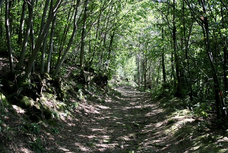
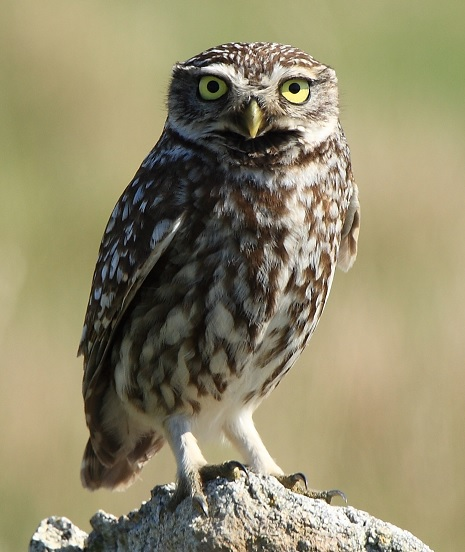

Geografia e Geologia dei colli
I colli euganei sono un gruppo di rilievi di altezza che varia tra i 300 e i 600 metri, situati a sud ovest di padova. I colli catturano particolarmente l'attenzione poichè si stagliano isolati nel cuore della pianura veneta. Per proteggere il territorio e valorizzarne le qualità turistiche, fu istituito nel 1989 il parco regionale dei colli euganei, il primo della regione Veneto.
Origine dei colli
 I colli sono di origine vulcanica: circa 30 milioni di anni fa il territorio che oggi costituisce la pianura padana era
un fondale marino. In questo contesto i colli sono nati in seguito ad eruzioni sottomarine che hanno depositato lava sul fondale marino.
In seguito, le stesse tensioni nelle crosta terrestre che hanno innalzato la catena montuosa delle alpi ha sollevato la pianura veneta e con
essa i colli. A testimonianza di questi eventi, ancora oggi è possibile trovare in una fenditura del Monte Resino fossili di ammoniti, animali
marini dotati di conchiglia esterna a forma di spirale.
I colli sono di origine vulcanica: circa 30 milioni di anni fa il territorio che oggi costituisce la pianura padana era
un fondale marino. In questo contesto i colli sono nati in seguito ad eruzioni sottomarine che hanno depositato lava sul fondale marino.
In seguito, le stesse tensioni nelle crosta terrestre che hanno innalzato la catena montuosa delle alpi ha sollevato la pianura veneta e con
essa i colli. A testimonianza di questi eventi, ancora oggi è possibile trovare in una fenditura del Monte Resino fossili di ammoniti, animali
marini dotati di conchiglia esterna a forma di spirale.
Geologia
Le roccie che si incontrano percorrendo i sentieri dei colli sono di fondamental importanza per comprenderne la storia. Le roccie più chiare sono di natura calcarea, si tratta di roccie sedimentarie databili a quando la pianura padana giaceva sul fondale marino. Il più antico tipo di roccia trovato sui colli euganei è chiamato Rosso ammonitico per via del suo colore e perchè contiene al suo interno fossili di ammoniti. Questa roccia risale al periodo che va dai 150 ai 135 milioni di anni fa. Più recente è invece la roccia chiamata Biancone per via del colore bianco, che risale fino ai 90 milioni di anni fa. Il calcare contenuto in queste roccie ha origine nei gusci di minuscoli microorganismi che sono visibili al microscopio. Risalente fino a 55 milioni di anni fa troviamo la Scaglia rossa, che è sempre un tipo di roccia calcarea che però presenta un abbondanza di fossili di ricci di mare e denti di squalo. Infine il più recente strato di roccia formatosi è di colore verde-grigiastro e prende il nome di Marna euganea.
Flora
 Il terreno ha un enorme influenza sulla flora del parco, pertanto in base al terreno incontreremo vegetazione diversa. Mentre la parte meridionale dei colli è caratterizzata da zone prative e boschi di querce, il lato nord dei colli è caratterizzato da vegetazione della macchia mediterranea. Altri alberi comuni sui colli sono il castagno e la robinia.
Fauna
 Prevalentemente la fauna dei colli euganei è composta da piccoli mammiferi come lepri, cinghiali, volpi, tassi e faine. La presenza di piccoli mammiferi come lepri ed altri roditori offre una nicchia ecologica ad uccelli rapaci come falchi e civette. Infine vi è un abbondanza di anfibi e rettili tra cui il ramarro, una splendida lucertola lunga fino a 45 cm di colore verde per eccezione del mento che è di colore blu acceso e la rara testugine dei colli euganei, un adattamento particolare ai colli della testugine palustre europea.